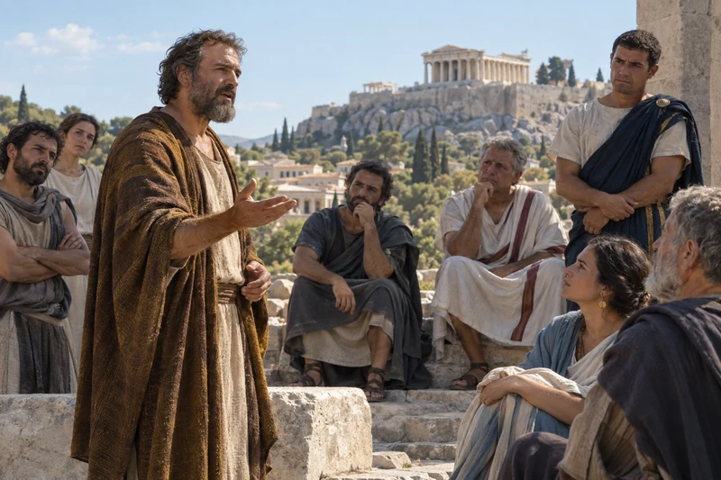

Read His words together
An adult listens beside open scriptures. Bring your own questions to the Savior’s words.
Read “Read His words together” in Jesus Christ →Stand Forever · Foundational study
Is there a God who is our Father?
Explore scripture about our Heavenly Father, His love, and our relationship with Him. Follow the passages and questions throughout the study.
ContinueIs there a God who is our Father? Does He know us? Begin with the scriptures Latter-day Saints turn to when asking these questions. Take time to read, reflect, and pray as you explore them.
You can enter this study with conviction, uncertainty, or a mixture of both. Start by writing your question in your own words. Are you asking whether God exists, whether He knows you, or how to recognize an answer? These are related questions, but naming the one you are carrying makes your next step more useful.
Begin with one of the short readings below. What does it teach you about Heavenly Father? Write down a verse you want to remember, what you understand so far, and a question you still have.
An adult listens beside open scriptures. Bring your own questions to the Savior’s words.
Read “Read His words together” in Jesus Christ →Jesus Christ invites us to know the Father. Begin with the scriptural accounts of people receiving that invitation and passing it to another generation.
Where did people first learn to speak of God? The scriptures begin with God making Himself known. In the book of Moses, Adam and Eve continue to call upon Him after leaving Eden. They learn of the Son’s redeeming sacrifice and share what they have received with their sons and daughters.
This is the beginning of the story this study follows: people hear, remember, teach and seek for themselves. Adam and Eve’s children still have choices to make. Being taught about God does not remove the need to turn toward Him personally.

Explore and study
Adam and Eve share what they have learned with their children. Their family’s story joins work and worship with teaching the next generation.
Who first helped you think about God, and what would you like to understand for yourself?
Moses describes a book of remembrance and children learning to read and write. Seth teaches his son; Jared teaches Enoch. Later, Enoch tells his listeners both that his father taught him and that the Lord spoke to him. Family teaching, a written record and his own witness belong together in his account.
Those small acts of keeping and teaching a record matter. A person who was not present for an earlier revelation can still encounter the testimony of someone who was. The record gives the next generation something to read, ask about and carry forward.

Explore and study
A child looks up from a kept record as an adult explains. Moses describes children learning to read and write so that remembrance could outlive its first witnesses.
What would you want a younger person to understand from your own experience, without pretending you know more than you do?
Abraham’s account begins with a desire for righteousness and greater knowledge. He looks to blessings associated with earlier fathers even while describing serious failures in his own household. His search shows that honoring a spiritual inheritance can include choosing a different course from people close to us.
Near the end of the chapter, Abraham explains that ancestral records have been preserved in his hands. He intends to pass their knowledge to his posterity. Receiving a record becomes a responsibility toward people he will never meet.

Explore and study
Abraham and Sarah sit beside an open record. Abraham describes preserving knowledge received from earlier generations for the benefit of those still to come.
What have you received that is worth passing on, and what patterns might you need to change?
In Deuteronomy, love for God enters the ordinary hours of a household. Parents are told to speak of His words at home, along the road, at bedtime and when the day begins. Later in the chapter, a child asks what the commandments mean. The answer recalls deliverance from Egypt and the life God has asked His people to live.
Psalm 78 also looks toward children not yet born. Remembering is more than preserving names or dates; it is helping another generation place its hope in God. A sincere question can open that conversation instead of interrupting it.
Deuteronomy 6:4–9, 20–25 Psalm 78:1–8

Explore and study
A child speaks while an adult listens along the road. Deuteronomy calls families to speak of God at home and along the way.
How could you answer someone's question about your faith with a real experience rather than a rehearsed reply?
Enos remembers his father’s teaching about eternal life and the joy of the Saints. Those words return to him while he is hunting, and he begins to pray. His account moves from a father's instruction to a son's own plea for forgiveness.
Enos later prays for his people and for others beyond his community. What he received from his father grows into concern for other people. His account can help us ask how learning about God might change both our prayers and the people we remember in them.

Continue the study
Follow Enos from remembered words into prayer for himself and for others.
Which words have stayed with you, and what do they move you to ask God now?
Philip asks Jesus to show the disciples the Father. Jesus directs him back to the words and works he has already witnessed. The Savior’s care for people, His teaching and His obedience help us understand the Father who sent Him.
Latter-day Saints believe the Father and the Son are distinct persons, united in purpose. Jesus does not ask us to approach an unknown, indifferent God. He teaches us to pray to the Father and to come to Him through the Son.
John 14:6–11 Matthew 6:5–15 Godhead — current Church study guide The Grandeur of God — Jeffrey R. Holland
What does one particular act of Jesus help you understand about His Father?
In the Sermon on the Mount, Jesus teaches His disciples to pray to the Father. Matthew 6:5–13 connects prayer with sincerity rather than public performance. The prayer includes reverence, daily need, forgiveness, and dependence on God. Its simplicity offers a starting place even when you do not know what to say.
Explore and study
Beneath the open sky, Jesus kneels to speak with His Father. His example teaches that prayer can be personal, reverent and honest.
Read the surrounding teaching about giving and forgiveness. Jesus places prayer within a life turned toward God, not within a technique for controlling an outcome. You might begin by naming one gratitude, one need, and one question. This is a suggested practice, not a promise that a particular feeling or answer will arrive on your schedule.
What would I say to the Father if I did not need to sound certain or polished? What part of the Lord’s Prayer could help me begin?
Joseph Smith’s history describes a young person unsettled by competing religious claims. Reading James led him to ask God. In his account of the vision, one of the two Personages calls Joseph by name and introduces the other as His Beloved Son.
That witness is part of why Latter-day Saints speak of Heavenly Father as a real, personal being. Doctrine and Covenants 130:22 teaches that the Father and the Son have bodies of flesh and bones, while the Holy Ghost is a personage of spirit. These are distinct members of the Godhead, not different names for one person.
Joseph Smith—History 1:11–20 Doctrine and Covenants 130:22–23
Continue with Joseph Smith’s account and the Restoration study
What question would you bring to God if you did not have to hide your uncertainty?
Early Latter-day Saints explored a related question in the second Lecture on Faith: how could one generation’s knowledge of God reach another? The lecture follows the scriptural family line from Adam through later patriarchs. It argues that testimony heard from others can awaken a person’s own search.
The lectures were theological lessons used in Kirtland and included in the 1835 Doctrine and Covenants. They are not part of today’s scriptural canon. Read Lecture 2 as an early reflection on testimony and faith, alongside the scriptures it discusses. For the nature of the Father, use current scripture and Church teaching; the Church’s historical account explains why language in Lecture 5 later raised concerns.
Lecture Second, paragraphs 54–55 Lecture Second, questions on receiving testimony Lectures on Theology — Church History Topics

Explore and study
Readers gather around an open book. Early Saints studied the Lectures on Faith as they sought to understand faith in God and the testimony they had received.
Lecture Second, paragraphs 54–55 Lecture Second, questions on receiving testimony Lectures on Theology — Church History Topics
How can another person's testimony help you begin seeking without replacing your own study and prayer?
Acts 17 places Paul in Athens, speaking with people whose religious assumptions differ from his own. In verses 22–31, he describes God as the giver of life and speaks of humanity as His offspring. Paul moves from the world his listeners know toward an invitation to seek God and consider resurrection.

Explore and study
Paul speaks of God as the giver of life and invites his listeners to seek Him. Some believe, while others question or turn away. Read his words and their responses together.
Read the address as a whole. Notice what Paul says about God, what he asks people to do, and the varied reactions afterward. The passage records religious teaching and a public encounter; it is not a modern scientific demonstration. Latter-day Saints read its language of offspring as part of their scriptural understanding of a relationship with Heavenly Father.
Which description of God stands out to you? How might seeing another person as connected to God change the way you listen to or treat that person?
For a longer exploration of this question, watch Corbridge’s discussion and return to Paul’s address with your own notes.

Video · Original publisher thumbnail
Lawrence E. Corbridge considers belief in God and the roles of reason and spiritual witness. Compare his discussion with your notes from Acts 17.
Scripture Central · Lawrence E. Corbridge
Moses 1 is part of the Pearl of Great Price, a book of scripture in the Latter-day Saint canon. The chapter presents Moses speaking with God and learning about his own relationship to Him. Near its conclusion, God explains His work in terms of the immortality and eternal life of humanity.
Explore and study
An older man holds a bowl he made by hand while a volunteer listens with genuine interest. Being seen, heard and valued can help us recognize the divine worth God has given every person.
Read verses 1–11 alongside verses 37–39. Hold the chapter’s sense of human limitation together with its attention to human worth. This text gives a theological account of purpose; it does not supply the cause of every experience a person has. Let its claims about God and His work lead your reflection before asking it to resolve a different question.
Read Moses 1, especially verses 1–11 and 37–39
What kind of purpose does this chapter describe? What ordinary responsibility or relationship could I approach with greater care because of it?
Alma 32 addresses people who have been excluded from their place of worship. Alma discusses humility and faith, then uses a seed as a comparison for receiving and nourishing the word. His invitation includes beginning with a desire to believe and attending to what follows over time.
Explore and study
Careful hands tend a small seedling in a greenhouse. Like Alma's seed of faith, new belief needs light, patience and steady nourishment before its strength can be known.
Read verses 21–43 rather than isolating the seed image from its setting. Notice the difference between an initial response and continued nourishment. The passage invites participation, patience, and examination. A focusChrist application is to choose one teaching of Jesus, live it deliberately, and record what you notice without exaggerating either certainty or disappointment.
What teaching could I practice this week? What would I observe honestly, and when will I return to the passage to reflect?
Study how the Savior helps us know the Father, then consider how covenant discipleship can shape daily life. Choose a message, read its sources and keep one question to ponder.
Video · Original publisher thumbnail
Russell M. Nelson connects rest in Jesus Christ with covenant discipleship. Consider how a belief about God can shape a daily commitment.
Official General Conference channel · October 2022
General Conference
Jeffrey R. Holland invites us to see the Father’s character in the words, compassion and sacrifice of Jesus Christ.
Jeffrey R. Holland · October 2003
You do not need to complete every resource in one sitting. A family or study partner can choose one reading together, let each person describe what they noticed, and leave room for different questions. Keep the conversation curious and respectful; the purpose is to understand and grow, not to force identical responses.
Explore and study
A woman and an older man tend herbs together in a community garden. In shared work and easy companionship, each treats the other as a beloved child of God.
Bring a question to Ask and include the passage you were reading. Treat an AI-assisted explanation as a study aid and check its references in the original source.
Read the scriptural accounts behind this study, then explore the early Saints’ discussion of faith. The Lectures on Faith links are historical readings; current teaching about the Godhead is grounded in scripture and the Church’s current study guides.
These studies belong together. Keep your notes as you move between them: what the sources teach, what you have experienced, what remains open, and what you want to do next.